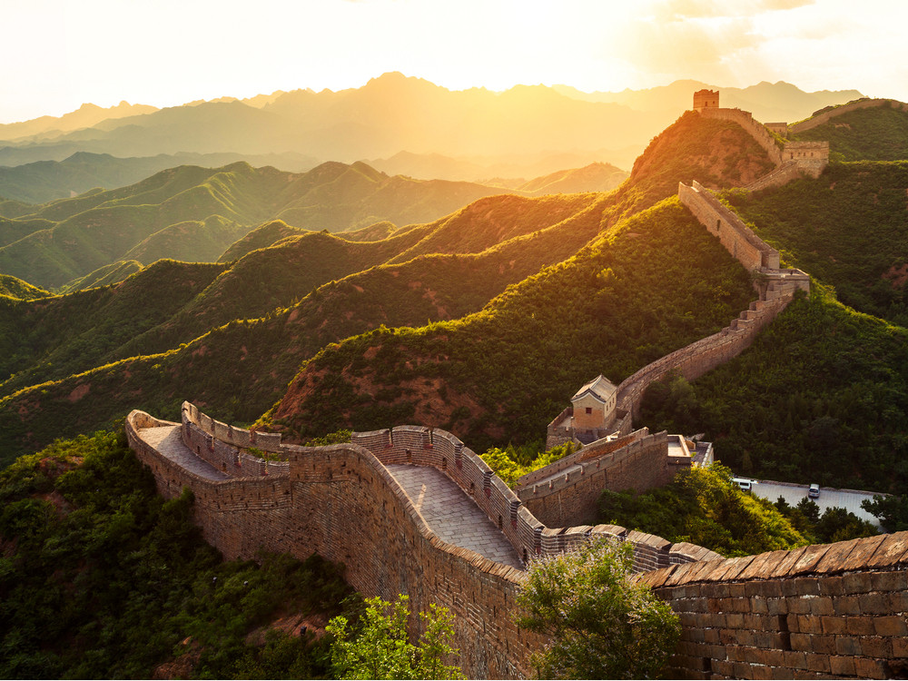
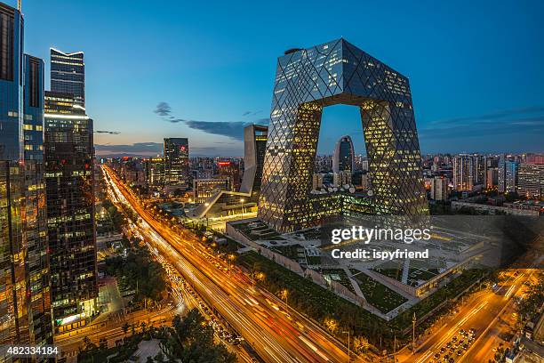
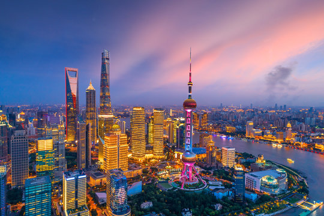
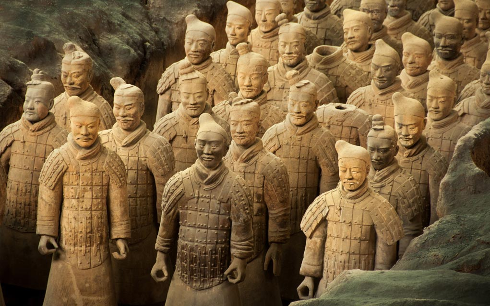
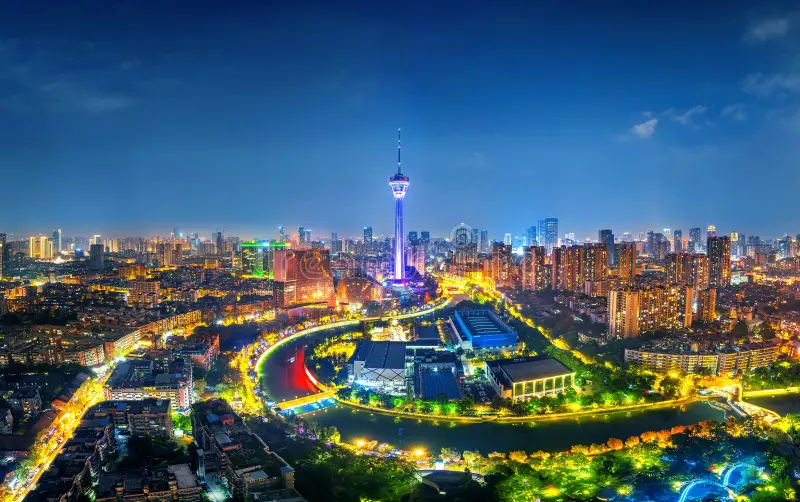
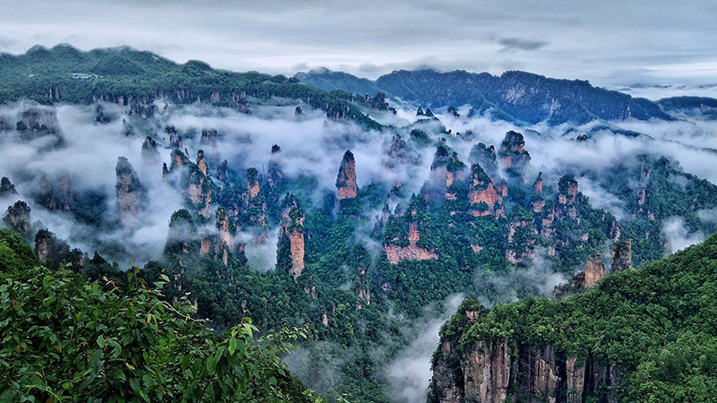

De Chinese Muur is een van de meest iconische bouwwerken ter wereld en strekt zich uit over duizenden kilometers door Noord-China. De bouw begon rond de 7e eeuw v.Chr., maar de meeste bestaande delen stammen uit de Ming-dynastie (14e–17e eeuw). Oorspronkelijk diende de muur als verdedigingswerk tegen invallen van nomadische stammen uit het noorden. Afhankelijk van de regio is de muur opgebouwd uit stenen, bakstenen, aarde en hout, met wachttorens en forten om soldaten te huisvesten en signalen door te geven. De Chinese Muur symboliseert doorzettingsvermogen en bescherming, en is tegenwoordig een populaire toeristische bestemming en UNESCO-werelderfgoed. Ondanks zijn grootte was de muur nooit volledig onneembaar voor indringers, maar het blijft een nationaal icoon dat miljoenen bezoekers van over de hele wereld trekt.

Beijing, de bruisende hoofdstad van China, is een stad waar eeuwenoude geschiedenis samenkomt met moderne energie. Wandel door de Verboden Stad en voel de grandeur van keizers uit het verleden, of bewonder de serene schoonheid van de Tempel van de Hemel. Op het gigantische Tiananmen-plein ervaar je het hart van de stad, terwijl levendige markten, trendy cafés en heerlijke straatgerechten je zintuigen prikkelen. Beijing is een stad van contrasten: oude poorten en pagodes naast futuristische wolkenkrabbers, traditionele hofjes naast moderne winkelstraten. Elke hoek van de stad vertelt een verhaal en nodigt uit tot ontdekken. Voor toeristen biedt Beijing een onvergetelijke mix van cultuur, eten en avontuur, een plek waar je keer op keer nieuwe verrassingen vindt.

Shanghai, de sprankelende metropool van China, combineert moderne pracht met historische charme. Wandel over de Bund en bewonder de indrukwekkende skyline van wolkenkrabbers die ’s avonds oplichten in een zee van licht. Ontdek traditionele tempels en oude straatjes zoals in het historische Yuyuan Garden, terwijl trendy cafés, winkelcentra en kunstgalerijen zorgen voor een moderne vibe. De stad bruist van energie, van het levendige straatleven tot culinaire hoogstandjes zoals Xiaolongbao en lokale delicatessen. Shanghai is een stad van contrasten: futuristische architectuur naast historische gebouwen, rustgevende tuinen naast drukke markten. Voor toeristen biedt Shanghai een onvergetelijke ervaring vol cultuur, avontuur en gastronomie, een plek waar elke bezoeker nieuwe indrukken opdoet.

Het Terracottaleger in Xi’an is een van de meest indrukwekkende archeologische ontdekkingen ter wereld. Duizenden levensgrote terracotta soldaten, paarden en strijdwagens staan in strakke rijen opgesteld, elk uniek en met ongelooflijke details. Het leger werd meer dan 2.000 jaar geleden gemaakt om de eerste keizer van China, Qin Shi Huang, te beschermen in het hiernamaals. Bezoekers kunnen verdwalen tussen de soldatenhallen en zich verwonderen over de grootte, precisie en historische betekenis van dit meesterwerk. Het Terracottaleger biedt een fascinerende blik op het oude China en de macht van zijn keizers. Voor toeristen is dit een onvergetelijke ervaring die geschiedenis tot leven brengt en een must-see is tijdens een reis door China.

Chengdu, de hoofdstad van de provincie Sichuan, staat bekend om zijn ontspannen sfeer, pittige keuken en natuurlijk de reuzenpanda’s. Bezoekers kunnen een van de beroemde pandareservaten bezoeken en deze iconische dieren van dichtbij bewonderen. De stad combineert eeuwenoude tempels en traditionele hofjes met moderne winkelstraten en levendige markten. Chengdu is ook de culinaire hoofdstad van China, beroemd om gerechten zoals Sichuan hotpot en Kung Pao Kip, vol kruidige, rijke smaken. De ontspannen theecultuur, historische straatjes en groene parken maken Chengdu een perfecte mix van cultuur, natuur en gastronomie. Voor toeristen biedt Chengdu een unieke ervaring vol avontuur, smaak en charme, een plek die zowel geschiedenis als moderne gezelligheid uitstraalt.

Het Nationaal Park Zhangjiajie is een adembenemend natuurgebied in China, bekend om zijn torenhoge zandsteenpilaren en weelderige bossen. De unieke rotsformaties hebben als inspiratie gediend voor films en fantasierijke landschappen, zoals in de film Avatar. Wandel over glazen bruggen, smalle bergpaden en kabelbanen voor een onvergetelijk uitzicht op deze spectaculaire natuurwonderen. Het park biedt ook serene meren, watervallen en een rijke biodiversiteit, waardoor elke stap een nieuwe ontdekking is. Voor toeristen is Zhangjiajie een plek vol avontuur, natuurschoon en fotomomenten die een leven lang bijblijven. Het is een bestemming waar natuur, cultuur en adembenemende uitzichten samenkomen, ideaal voor iedereen die China op zijn mooist wil ervaren.
